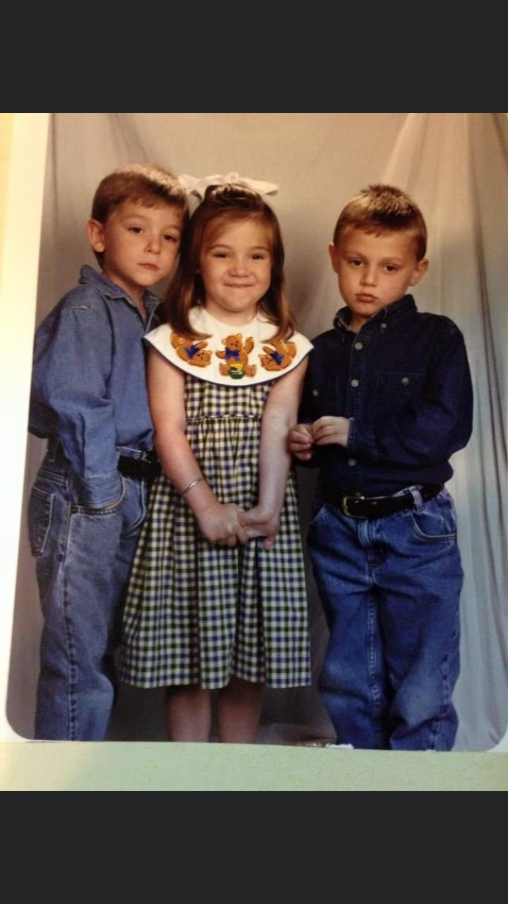

About me
Louisiana roots
I was born at Woman’s Hospital on Airline Highway and raised here in Baton Rouge. I ended up going to school right down the road at LSU. The old hospital site is only about 5½ miles from LSU’s Memorial Tower in a straight line.
Louisiana really is Sportsman’s Paradise, and the culture and food here are the best.

Growing up as a triplet
Fun fact about me: I was born a triplet. I like to say teamwork came built in. The best perk was having three birthday cake options.


A Louisiana football weekend
Growing up in Louisiana made it easy to pick my teams. I cheer for the LSU Tigers on Saturdays and the Saints on Sundays. Unfortunately, both teams seem to think a comfortable win would spoil the fun.
A love of the outdoors
I’ve always loved being outdoors, especially when I can get out on the water or spend a day in the woods. Hunting and fishing with my dad are two of my favorite ways to do that, and these photos bring back some of my favorite memories together.